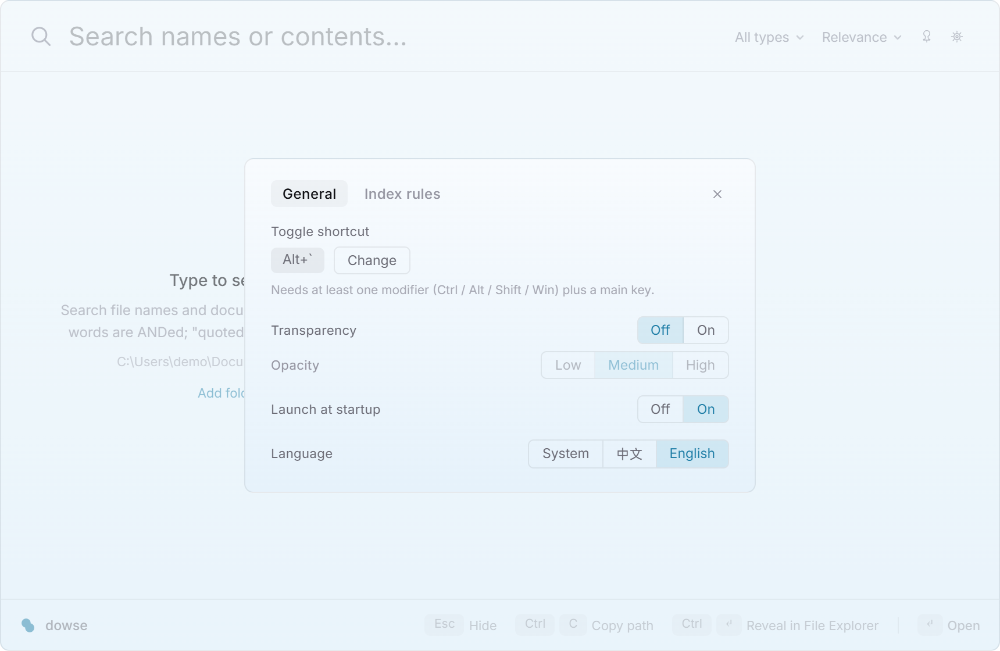
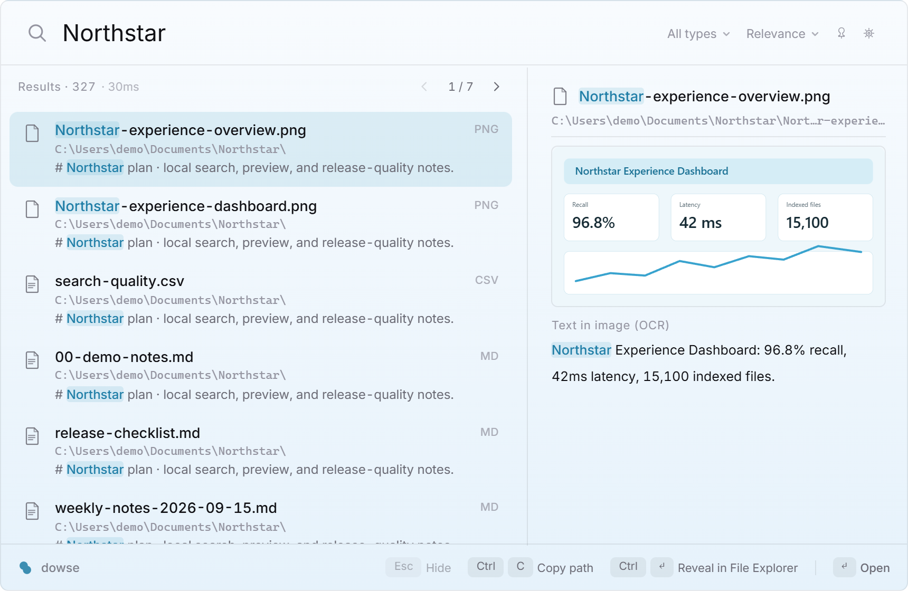

What it supports today
The desktop app, CLI, and MCP server use the same local index. Dowse is intended for folders that hold long-lived material you need to search repeatedly by content.
- File contents
- Plain text, Markdown, source code, PDF, DOCX, XLSX, and PPTX. Older GBK text files are detected before indexing.
- Text inside images
- PNG, JPG, WebP, and BMP are recognized locally with Windows.Media.Ocr. Images are not uploaded.
- Chinese search
- jieba tokenization with BM25 ranking. Queries also support phrases, paths, dates, sizes, and extension filters.
- Index updates
- File changes are watched while Dowse runs and reconciled at startup. Adding a folder does not rebuild the existing index.
- Result actions
- Open with the keyboard, or use the native context menu to open, reveal, copy the path, or copy the file name.
- Large result sets
- Results are paged in groups of 50. The compact page control appears only when it is needed, and arrow keys can cross pages.
Settings are available from the window
Click the gear in the top-right corner or press Ctrl+, anywhere in the window. New installs start with a solid background; transparency remains available as an option.
- Change the global shortcut
- Enable transparency and choose its level
- Configure launch at startup and interface language
- Edit excluded folders, extra text extensions, and the per-file size limit
The tray menu keeps the same common controls and now also links to the user guide and issue forms.


Everyday search controls
Results update as you type. Use the arrow keys to move, Enter to open, Ctrl+Enter to reveal in Explorer, and Ctrl+C to copy the path.
- An empty query shows the last 10 searches; reuse or delete them from the keyboard
- Filter results by document, code, or image
- Sort by relevance, modified time, or file size
- Pin the window when it should stay open after losing focus
Supported formats
The desktop app indexes only folders you explicitly add. Default rules skip common dependency, build-output, and version-control directories; all rules can be changed in Settings.
| Category | Formats | How they are handled |
|---|---|---|
| Text and code | TXT, Markdown, common source and configuration files | Detect encoding, then extract text directly |
| PDF files with a text layer | Extract the existing text layer; image-only PDFs are not OCR'd page by page yet | |
| Office | DOCX, XLSX, PPTX | Parse text from Office Open XML |
| Images | PNG, JPG, WebP, BMP | Recognize locally with the installed Windows OCR language packs |
Read-only MCP server
dowse mcp exposes search, long preview, and index-status tools. It reads the existing index, can run beside the desktop app, and cannot edit or delete files on an agent's behalf.
claude mcp add --scope user dowse -- dowse mcp{
"mcpServers": {
"dowse": {
"command": "dowse",
"args": ["mcp"]
}
}
}Install and build the first index
The desktop app does not require administrator privileges. The current installer is unsigned, so Windows SmartScreen may ask you to confirm its source the first time.
- Download the installer whose name ends in
setup.exefrom GitHub Releases. - Start Dowse, add one folder you search often, and let the first text-indexing pass finish.
- Press
Alt+`and search. If the folder contains many images, OCR can continue in the background.
Frequently asked questions
Does Dowse upload files or search queries?
No. Parsing, indexing, OCR, and queries run locally, and the app contains no telemetry. The index contains extracted text, so protect it as you would the source files.
Can it search scanned PDFs?
Dowse extracts an existing PDF text layer. Its image OCR currently handles separate image files and does not convert every page of an image-only PDF.
Does it require administrator privileges?
No. Normal indexing and search work as a regular user. Administrator access only enables the faster NTFS MFT / USN path when available.